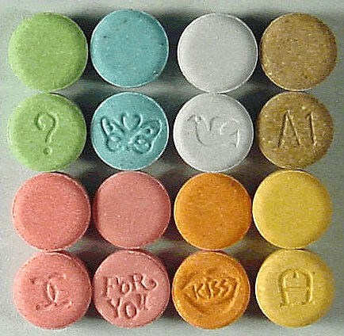
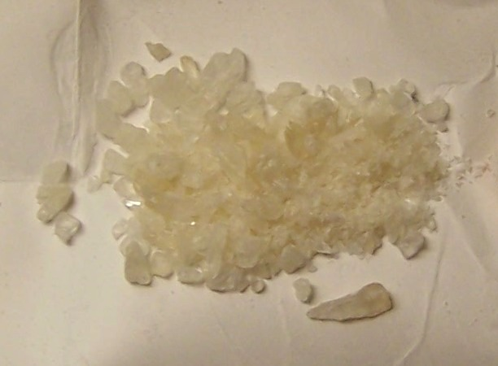
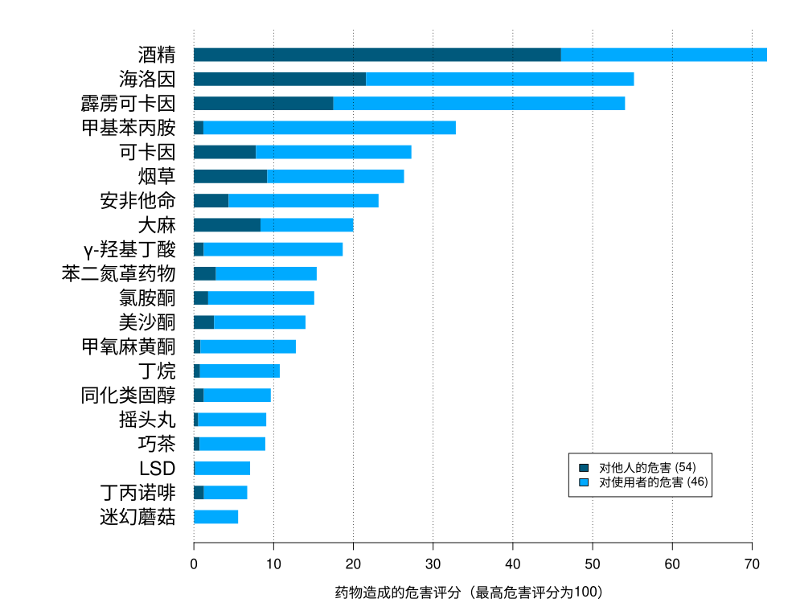
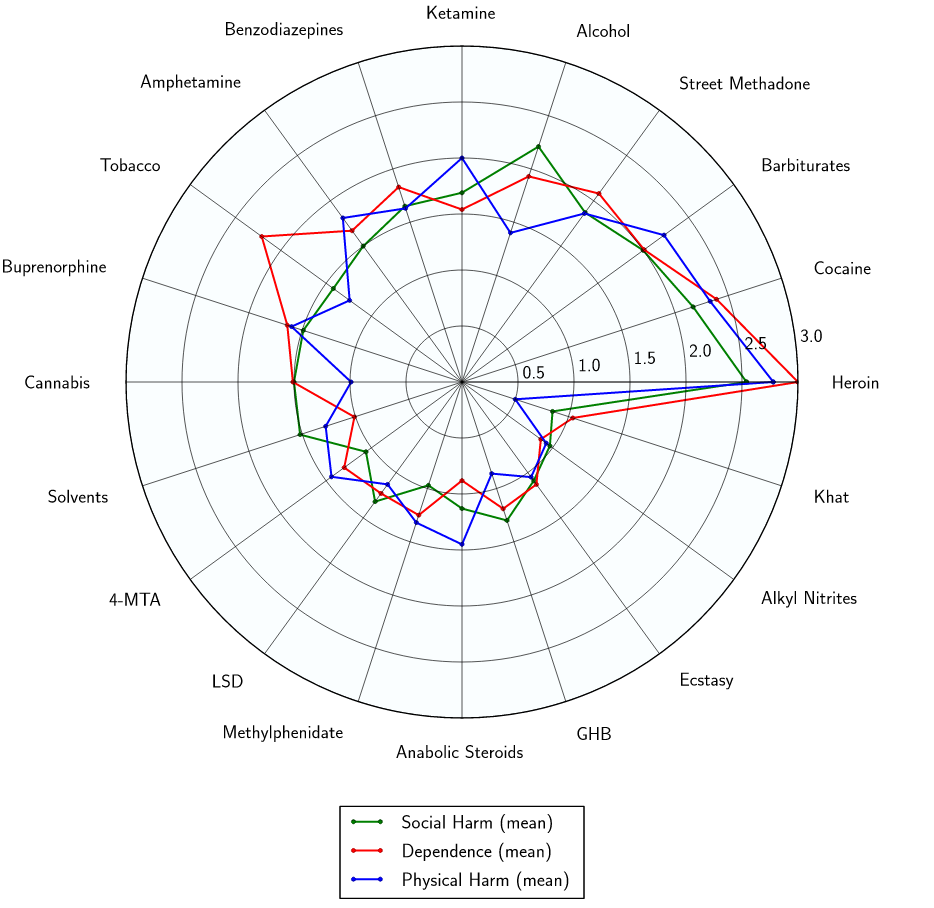

MDMA¶
摇头丸吃了会摇头是一个错误的刻板印象，其实整个身子都会随音乐舞动......
| 化学信息 | 亚甲二氧甲基苯丙胺（MDMA） |
|---|---|
| 结构式 |  |
| 分子式 | C11H15NO2 |
| CAS 号 | 42542-10-9 |
| 化学命名 | |
| 常用名称 | 亚甲二氧甲基苯丙胺（MDMA）、摇头丸、Molly、Mandy、Emma、MD、Ecstasy、E、X、XTC、Rolls、Beans、Pingers |
| 取代名称 | 3,4-亚甲二氧基-N-甲基苯丙胺 |
| 系统命名 | (RS)-1-(Benzo[d][1,3]dioxol-5-yl)-N-methylpropan-2-amine |
| 类别归属 | |
| 精神活性分类 | 兴奋剂 / 共情剂 |
| 化学分类 | 苯丙胺类物质 / 亚甲双氧基苯类物质 |
| 给药途径 | 🔽 口服 |
|---|---|
| 剂量 | |
| 阈值 | 20 mg |
| 轻微 | 20 ~ 80 mg |
| 中等 | 80 ~ 120 mg |
| 强烈 | 120 ~ 150 mg |
| 严重 | 150 mg + |
| 药效时长 | |
| 总时长 | 3 ~ 6 小时 |
| 药效发作 | 30 ~ 45 分钟 |
| 药效上升 | 15 ~ 30 分钟 |
| 药效达峰 | 1.5 ~ 2.5 小时 |
| 药效褪去 | 1 ~ 1.5 小时 |
| 药效残余 | 12 ~ 48 小时 |
| 相互作用 | |
|---|---|
| 5-MeO-xxT | ⚠️ 谨慎联用 |
| 酒精 | ⚠️ 谨慎联用 |
| 可卡因 | ⚠️ 谨慎联用 |
| DOx | ⚠️ 谨慎联用 |
| GHB | ⚠️ 谨慎联用 |
| GBL | ⚠️ 谨慎联用 |
| MXE | ⚠️ 谨慎联用 |
| αMT | ⚠️ 谨慎联用 |
| 蛋白酶抑制剂 | ⚠️ 谨慎联用 |
| SSRIs | ⚠️ 谨慎联用 |
| SNRIs | ⚠️ 谨慎联用 |
| 25x-NBOMe | 💔 联用危险 |
| PCP | 💔 联用危险 |
| 神经递质释放剂 | 💔 联用危险 |
| 2C-T-x | 💔 联用危险 |
| 5-HTP | 💔 联用危险 |
| 曲马多 | ⛔ 严禁联用 |
| 单胺氧化酶抑制剂 | ⛔ 严禁联用 |
| 右美沙芬 | ⛔ 严禁联用 |
[!WARNING] 警告
由于个体体重、耐受性、新陈代谢和个人敏感度的差异，请务必从低剂量开始。参见负责任的用药部分。
[!NOTE] 免责声明
本站的给药剂量信息收集自用户和相关资源，仅供教育目的使用。这不是医疗建议，应与其他来源核实以确保准确性。
[!NOTE] Useful information that users should know, even when skimming content.
MDMA 是苯丙胺类的一种经典共情剂物质，是毒品摇头丸的主要成分。
它是共情剂家族中最著名、使用最广泛的成员，这个多样化的群体还包括 MDA、Methylone、4-MMC 和 6-APB。它通过促进大脑中血清素、多巴胺和去甲肾上腺素的释放来产生效果，尤其是血清素。
MDMA 最早于 1912 年由制药公司默克开发。1 然而，直到 1970 年代，它才被报道用于人类，当时它在美国的地下心理治疗圈子中为人所知。2 在 1980 年代初，它传播到夜生活和锐舞文化中，最终导致其在 1985 年被联邦列为管制物质。3 到了 2014 年，据估计它是世界上最受欢迎的娱乐性药物之一，与可卡因和大麻并列。4
如今，娱乐性 MDMA 的使用广泛与舞会、电子舞曲以及夜店和锐舞场景相关联。5 研究人员目前正在调查 MDMA 是否可以辅助治疗难治性创伤后应激障碍（PTSD）、自闭症成人的社交焦虑，6 以及患有危及生命疾病的人的焦虑。7 8 9
主观效应包括兴奋、焦虑抑制、去抑制、共情和社交能力增强、放松和欣快感。 由于它能促进与自己和他人亲近的感觉，它被归类为共情剂。MDMA 的一个显著特性是耐受性建立得异常快，许多用户报告说，如果频繁使用，它的效果会急剧下降。
通常建议在每次使用之间等待一到三个月，以便给大脑足够的时间恢复血清素水平并避免毒性。此外，强烈不建议使用过高的剂量和多次补服，因为这被认为会显著增加 MDMA 的毒性。
MDMA 具有中等到高度的滥用潜力，但相比之下，产生真正的心理依赖或成瘾的潜力较低，似乎甚至低于大麻（低于 10%）。有趣的是，MDMA 的过度使用和依赖或成瘾的潜力实际上可能会受到某些地理因素的巨大影响，比如在其他文化或亚文化中，类似于氯胺酮。尽管与 MDMA 相比，氯胺酮在各种文化中的成瘾潜力仍然明显更高。MDMA 的急性不良反应通常是高剂量或多次剂量的结果；无论是因为过于频繁还是在 24 小时内过量使用。尽管如此，易感个体仍可能发生单剂毒性。10 MDMA 最严重的短期身体健康风险是体温升高和脱水，这已导致死亡。11 它还被证明在高剂量下具有神经毒性；12 然而，尚不清楚这种风险在多大程度上适用于典型的娱乐用途。13 MDMA 可能会导致过度口渴，并且无法排出体内的水，这可能导致水中毒和电解质失衡。MDMA 已被证明会导致性功能障碍，包括勃起功能障碍和性高潮延迟（见主观效应）。
历史与文化¶
MDMA 最初由德国化学家 Anton Köllisch 博士于 1912 年在默克制药公司工作时合成。Köllisch 当时正在开发有助于控制出血过多的药物，他对 MDMA 合成感兴趣是因为它是生产甲基海得拉斯梯宁（止血剂海得拉斯梯宁的甲基化类似物）的中间体。当时没有任何迹象表明对 MDMA 本身作为活性剂感兴趣。1
直到 1927 年，Max Oberlin 博士在默克公司寻找具有类似肾上腺素或麻黄碱作用谱的化合物时，进行了首次证实的药理测试，才再次提到它。尽管结果很有希望，但由于物质价格上涨，研究停止了。1
1965 年，美国化学家 Alexander Shulgin 作为学术练习合成了 MDMA，但没有测试其精神活性。14 2 Shulgin 声称在 1967 年从一名学生那里第一次听说了 MDMA 的效果，并决定自己进行实验。他对这种物质的效果印象深刻，并相信它具有治疗效用。他向治疗师和精神科医生宣传它，导致它作为各种心理障碍的辅助治疗获得了一定的普及。2
在此期间，心理治疗师 Leo Zeff 博士从退休中复出，随后向 4000 多名患者介绍了当时合法的 MDMA。从 1970 年代中期到 1980 年代中期，加利福尼亚州使用 MDMA（当时称为 Adam）的临床医生数量有所增长。15
MDMA 的娱乐性使用大约在同一时间流行起来，特别是在夜总会，最终引起了缉毒局（DEA）的注意。经过几次听证会，一名美国联邦行政法法官建议将 MDMA 列为附表 III 管制物质，以便可以在医疗领域使用。尽管如此，DEA 局长否决了这一建议，并将 MDMA 归类为附表 I 管制物质。16 14
在英国，1971 年的滥用药物法案已经在 1977 年进行了修改，将所有环取代苯丙胺类物质（如 MDMA）包括在内，并在 1985 年进一步修订，明确提到摇头丸（Ecstasy），将其归入 A 类。15
 |
|---|
| 默克公司 1912 年的 MDMA 合成专利证书 |
化学¶
MDMA，即 3,4-亚甲二氧基-N-甲基苯丙胺，是取代苯丙胺类物质的一种合成分子。苯丙胺类的分子都包含一个苯乙胺核心，由一个苯环通过乙基链结合到一个氨基（NH2）基团上，在 Rα 位置有一个额外的甲基取代。除此之外，MDMA 在 RN 位置包含一个甲基取代，这一特征与甲基苯丙胺共有。关键是，MDMA 分子还在苯环的 R3 和 R4 位置包含氧基团取代——这些氧基团通过亚甲基桥结合成亚甲二氧基环。MDMA 与其他共情剂和兴奋剂如 MDA、MDEA 和 MDAI 共享这个亚甲二氧基环。
药理学¶
MDMA 主要作为三种主要单胺神经递质 血清素、去甲肾上腺素和多巴胺的释放剂，通过其在痕量胺相关受体 1（TAAR1）和囊泡单胺转运体 2（VMAT2）的作用发挥作用。17 18 19 MDMA 是单胺转运体底物（即多巴胺转运体（DAT）、去甲肾上腺素转运体（NET）和血清素转运体（SERT）的底物），使其能够通过这些神经元膜转运蛋白进入单胺能神经元。18 通过作为单胺转运体底物，MDMA 在神经元膜转运体处产生竞争性再摄取抑制，与内源性单胺竞争再摄取。18 20
MDMA 抑制两种囊泡单胺转运体（VMATs），其中第二种（VMAT2）在单胺神经元囊泡膜内高度表达。19 一旦进入单胺神经元，MDMA 充当 VMAT2 抑制剂和 TAAR1 激动剂。18 21 MDMA 对 VMAT2 的抑制导致神经元细胞质中上述单胺神经递质浓度的增加。19 22 MDMA 激活 TAAR1 触发蛋白激酶信号传导事件，然后磷酸化神经元的相关单胺转运体。18
随后，这些磷酸化的单胺转运体要么反转转运方向——即从细胞内向突触间隙移动神经递质——要么缩回神经元，分别产生神经递质的流入和神经元膜转运体处的非竞争性再摄取抑制。18 与多巴胺和去甲肾上腺素转运体相比，MDMA 对血清素转运体的摄取亲和力高十倍，因此主要具有血清素能效应。23
MDMA 在突触后血清素受体 5-HT1 和 5-HT2 受体上也具有弱激动剂活性，其更有效的代谢物 MDA 可能会增强这种作用。24 25 26 27 血清中的皮质醇、催乳素和催产素数量因 MDMA 而增加。28
此外，MDMA 是两种 sigma 受体亚型的配体，尽管其在这些受体上的功效及其所起的作用尚未阐明。29
主观效应¶
下列效应引用自 主观效应索引（SEI），这是一个基于轶事用户报告和个人分析的开放研究文献。因此，应带着健康的怀疑态度来看待它们。
同样值得注意的是，这些效应不一定会以可预测或可靠的方式发生，尽管较高的剂量更可能引发全方位的效应。同样，不良反应 随着剂量的增加变得越来越可能，可能包括 成瘾、严重伤害或死亡 ☠。
-
躯体效应
 ¶
¶- 心律异常
- 食欲抑制
- 身体控制增强
- 支气管扩张
- 脱水：建议不要喝过量的水来避免水中毒，参见水中毒和电解质失衡部分。
- 排尿困难：像其他兴奋剂一样；这可能会以轻微或中等程度发生，这也是建议避免喝太多水的一个原因，参见水中毒和电解质失衡部分。
- 口干：避免喝太多水，参见水中毒和电解质失衡部分。嚼口香糖可能有助于增加湿润度并逆转干燥。
- 过度打哈欠：偶尔打哈欠被认为是血清素能活动的结果，这可能会让人感到更镇静或困倦。它更有可能在低剂量和/或更纯的 MDMA 中发生。因此，它有时被用作批次质量的指标。
- 血压升高30 31
- 体温升高32：由于 MDMA 是血清素释放剂，核心体温的升高往往是体验中显著且持续的一部分。必须小心，因为在危险的高温环境中服用过高剂量可能导致血清素毒性和相关的氧化应激，如果不加以治疗可能是致命的或极具破坏性的。避免喝太多水，参见水中毒和电解质失衡部分。
- 心率增快30
- 出汗增加33：避免喝太多水，参见水中毒和电解质失衡部分。
- 肌肉收缩
- 恶心：这种效果最常出现在体验的药效上升阶段，以及高剂量下，但在那些似乎易感的人群中也有自发发生的报道。这可能是由于肠道中存在大量的血清素受体。
- 神经毒性：长期使用可能导致显著程度的神经毒性。像这样的后果是将 MDMA 的使用限制在每年最多几次的主要原因。长期的抑郁或快感缺失症状在过度频繁使用中相当常见。
- 镇痛：这种效果通常不如阿片类药物那样强大。34 35 36
- 瞳孔扩大：与其他兴奋剂相比，这个成分可能非常突出，通常几乎与真正的迷幻剂相同。环境和照明水平也可能是一个因素。
- 癫痫发作：癫痫发作很少见，但可能发生在易感人群中，特别是当服用高剂量或在身体负担重的情况下（如脱水、疲劳、营养不良或过热）补服时。
- 暂时性勃起功能障碍&性高潮抑制37 38
- 自发性躯体感觉：MDMA 的「身体嗨」可以被描述为一种中度到极度的欣快感和高度愉悦的刺痛感，平滑地包裹整个身体。这种感觉保持着持续的存在，随着起效稳步上升，一旦达到顶峰就达到极限。
- 耐力增强
- 兴奋：MDMA 以其刺激和充满活力而闻名。这鼓励了跑步、散步、攀岩和跳舞等活动，使得 MDMA 成为音乐活动（如音乐节和锐舞）或一般夜生活活动的热门选择。MDMA 呈现的独特刺激风格可以描述为强迫性的。这意味着在高剂量下，随着下巴紧咬、不自主的身体颤抖和震动出现，变得很难或不可能保持静止，导致手部不稳和普遍缺乏运动控制。然而，与大多数其他兴奋剂不同的是，MDMA 的刺激效果也可能矛盾地伴随着持续或波浪般的深度镇静和放松感，这取决于剂量，低剂量体现出更放松或镇静的特质。然而，在中等到高剂量下，它的作用更类似于传统兴奋剂；导致几乎不变的四处走动和从事各种移动活动的愿望。对于某些人来说，如果该用户倾向于或愿意接受此类活动，这种鼓励的刺激风格以导致非常活跃的身体行为（如跳舞）而闻名。然而，对于那些对舞蹈行为有普遍社会偏见的人来说，在足够的（中等）剂量 MDMA 影响下，突然对这个想法变得更加开放也并不罕见。
- 触觉增强：MDMA 对触觉产生明显的增强。用户通常报告说有一种柔软和毛茸茸的感觉覆盖在皮肤上。同样，触摸柔软和毛茸茸的物体（如长毛地毯）会变得令人无法抗拒的愉悦和满足。MDMA 类型的触觉增强似乎是共情剂类独有的效果，可能是一种血清素相关的效果。尽管也值得注意的是，该药物的许多实验者发现触觉效果（特别是在愉悦方面）经常被其他用户明显夸大，其中一些支持者甚至声称与身体接触相关的近乎「高潮」的感觉。
- 磨牙39：这种效果在与认知和身体欣快感一起体验时，通常会导致用户轻微或强烈地紧咬下巴肌肉，有时甚至达到个人面部表情开始改变的程度。这有时通俗地称为「gurning」。这种特殊效果是人们在锐舞时服用 MDMA 使用奶嘴或嚼口香糖的原因，因为强烈的磨牙会导致许多用户过度用力咬嘴唇。40 并且通常仅在中等到高剂量下体验到。对于其他人，特别是如果他们容易体验到肌肉放松的矛盾感觉，磨牙症可能不那么明显。
- 体温调节抑制：避免喝太多水，参见水中毒和电解质失衡部分。
- 血管收缩
- 视物振动：在高剂量下，人的眼球可能会开始快速地来回摆动，导致视力变得模糊并暂时失去焦点。这是一种称为眼球震颤的状况。
-
视觉效应
 ¶
¶MDMA 的视觉效果比传统的迷幻剂更具选择性，一致性也更低。这导致许多人无视 MDMA 的迷幻方面，认为那是神话、谣言或可忽略不计的效果，尽管有大量的轶事报告表明并非如此。（通常是轻微的）幻觉效果不能保证显现，但在高剂量使用化学纯 MDMA 时最有可能发生，以及在体验结束时；特别是如果用户一直在吸食大麻。药效褪去期间的视觉效果通常以闭眼视觉（CEVs）为特征，如典型的迷幻样图案。而在高峰效应期间，视觉效果往往更类似于标准迷幻剂的睁眼扭曲，尽管形式要温和得多，生动程度也低得多。如果用户以前有使用迷幻剂的经验，它们似乎也更有可能发生。
增强¶
MDMA 呈现一系列感官增强，通常具有适度的视觉增强，与标准迷幻剂相比特征温和，但与经典兴奋剂相比仍然明显存在。这些通常包括：
- 颜色增强：当暴露在非常明亮或霓虹色中时，这对 MDMA 来说异常强烈；特别是当观看辐射或发光的颜色（如荧光棒）时。
- 模式识别增强：虽然类似或相关的化合物以诱导空想性错视（无处不在地感知随机视觉刺激中的图案）而闻名；MDMA 只是增强了对现有图案表面和设计的质量、清晰度和审美欣赏。
抑制¶
扭曲¶
几何¶
MDMA 产生的视觉几何可以描述为在外观上更类似于裸盖菇素（Psilocin）而不是 LSD。它可以通过其变体全面描述为：主要在复杂性上错综复杂，形式上抽象，风格上自然，组织上结构化，光线上昏暗，颜色上主要是单调的蓝色和灰色，阴影上有光泽，边缘锋利，尺寸小，速度快，运动平滑，圆角和棱角相等，深度上非沉浸式，强度上一致。在高剂量下，它们比 8B 级视觉几何更有可能产生 8A 级视觉几何状态。许多用户报告说，MDMA 几何呈现出黑暗和威胁的情感氛围，带有合成和令人伤脑筋的感觉。
幻觉状态¶
MDMA 能够产生一系列独特的低级和高级幻觉状态，其方式比几乎所有其他常用迷幻剂的一致性和可重复性都要低得多。这些效果在高峰效应或体验的药效褪去期间更为常见，通常包括：
- 外部幻觉 （自主实体、场景、布景和景观、视角幻觉 和 情景与情节）- 这种效果与谵妄剂产生的效果有许多相似之处，但并不一致地显现，通常只发生在严重的、可能有毒的剂量下，因此在体验 MDMA 的视觉效果时不被认为是典型或健康的迹象。它可以通过其变体全面描述为：可信度上是谵妄的，可控性上是自主的，风格上是实体的。它们通常遵循记忆重播和半现实或预期事件的主题。例如，人们可能随意拿着物体或执行人们期望他们在现实生活中会做的动作，然后在进一步检查下消失和溶解。这方面的常见例子包括看到人们戴着眼镜或帽子，而实际上并没有，以及将物体误认为是人类或动物。
- 内部幻觉：MDMA 诱导的内部幻觉仅作为极高剂量下的自发突破存在。这种效果的变体在可信度上是谵妄的，风格上是互动的，内容上是新体验，可控性上是自主的，外观上是实体的。它们最常见的表现方式是通过入睡前幻觉场景，用户可能会在经历了一晚的使用后逐渐入睡时体验到；这些通常可以描述为前几个小时的记忆重播。这些是短暂和稍纵即逝的，但频繁且完全可信和令人信服。就主题而言，它们通常以与人交谈的形式出现，或者表现为离奇和极其荒谬的情节。
- 周边信息误判
-
认知效应
 ¶
¶MDMA 的一般思维空间被许多人描述为明显的精神刺激、爱或柏拉图式情感的感觉、同理心、健谈、对新颖社交互动的开放态度以及明显的活力、复兴和欣快愉悦感。它能够产生大量通常与共情剂和兴奋剂相关的认知效果。这些效果中最突出的包括：
- 失忆：极高剂量的 MDMA 有时会导致部分失忆。
- 焦虑抑制：虽然最初但非常短暂的药效上升阶段实际上可能以轻微或明显的焦虑为特征，但这一成分几乎总是在之后很快被彻底的全面和/或主要的焦虑和担忧抑制所取代。
- 认知欣快：强烈的情感欣快和幸福感以及积极情绪和乐观主义的显著增加几乎普遍存在于 MDMA 中，这可能是血清素释放浓度增加以及去甲肾上腺素和多巴胺增加（程度较小）的直接结果。
- 强迫性补量
- 创造力增强：虽然这是一个非常常见的效果，但显然在具有某些人格类型或特定类型的创造性努力（例如音乐制作而不是创作文学作品）的人群中更为普遍。与真正的迷幻化合物相比，它通常也被认为是不太显著的效果。
- 性欲减退41 42 43
- 谵妄&混乱：这种效果通常只发生在过高的剂量下，并且与体温调节失调和过热有关，特别是当 MDMA 在拥挤、身体剧烈的环境中服用时，导致用户无法充分冷却、休息或补水。
- 去抑制：这种效果可能非常强大，表现为（有时是不受限制的）社交能力增加、健谈以及在友善和愿意与陌生人公开交流方面的非凡自信。然而，这被认为比急性酒精中毒更不「令人讨厌」和粗心。
- 自我膨胀：这可以以多种方式表现（积极和消极），但通常以自尊心的增加和旺盛的自信感为特征。个人性格类型和用户的自然神经化学可以在这种效果的质量中发挥主要作用。
- 情绪强化：这种效果通常与 MDMA 的共情和深情方面联系最紧密，尽管它往往缺乏大多数迷幻剂甚至大麻中存在的情感同情和心理情感脆弱感，一些用户甚至报告情绪几乎没有或根本没有有意义的变化或增强。它通常被认为更多是对他人性情的*理解*增加，而不是深切的衷心或发自内心的「感觉」，如同情或怜悯。
- 共情、情感和社交能力增强：与任何其他已知物质相比，这种特殊且主要特征性的效果通常在 MDMA 中更一致、明显、功能性、强大和具有治疗作用。它是任何 MDMA 体验中最明显和最引人注目的效果，并主导着思维空间。然而，随着时间的推移和重复使用，这种效果会大大减弱，因为灌输的观点变得完全扎根并已经到位，使人们感到仅仅是受到刺激和欣快，没有明显的与他人交流的新冲动。一些用户报告说，MDMA 仅在十次体验后就「失去了魔力」，而其他人则报告说使用了数百次后共情品质才消失。这似乎并不适用于所有用户。然而，许多用户报告说，尽管使用了几十次甚至几百次，他们并没有经历任何新颖品质的下降。
- 专注力强化：专注力增强仅发生在低至中等剂量下。较高的剂量通常会损害注意力和注意力集中，特别是在体验的「下降」阶段。
- 沉浸感强化：这种效果在接触音乐（特别是正规的音乐相关活动）或灯光秀和类似类型的视觉或听觉展示的设置中似乎异常明显。
- 音乐欣赏能力增强：这种效果通常通过增加音乐声学现象的享乐和激动人心的情感影响来表现自己，通常会导致一种「炒作」或肾上腺素激增的感觉。对于一些用户来说，据报道对音乐中微妙细节的理解增强或对作曲和歌词的更深层理解感，这与许多其他致幻化合物相比本质上不太常见。整体效果在很大程度上主要表明对一般听音乐的热情全面增加。极少数情况下，人们可能会发现音乐令人讨厌或分心而不是增强——这似乎很大程度上基于场景和心境，很少发生。
- 正念
- 动机增强
- 复兴感
- 思维加速：这一成分可以非常有效地补充体验期间发生的社交互动和与他人的口头交流。这尤其有利，因为这种效果似乎明显不如其他兴奋剂那样狂躁、注意力分散、「快速」和动荡；许多人甚至将其描述为感觉「平滑」和独特的易于管理。
- 时间压缩：MDMA 通常会产生强烈的时间压缩感，并在主观上将时间流逝的体验加速到异常显著的程度；可能比任何其他常用的娱乐性物质都要多。
- 清醒
-
听觉效应
 ¶
¶ -
超个人效应
 ¶
¶ -
药效残余
 ¶
¶在共情剂或兴奋剂体验的药效褪去期间发生的效果通常感觉比药效达峰期间发生的效果更消极和不舒服。这通常被称为「下降期」（comedown），被认为是由于神经递质耗尽而发生的。虽然，近年来人们越来越普遍地认识到，MDMA 真正的「宿醉」，特别是在抑郁方面，往往实际上会「隔一天」，因为大脑据称在第二天仍释放大量血清素，这可能解释了「余辉」效应，该效应最终后来被真正的宿醉和不舒服的情感效果所取代。这些效果通常包括：
- 焦虑
- 食欲抑制
- 脑电击感
- 认知疲劳
- 抑郁：可能从轻微到严重不等，通常在主要效果突然结束后的最初下降期最为严重，而不是在接下来的几天里。话虽如此，接下来几天的抑郁仍然通常很明显，并且可能持续长达一周。
- 现实感丧失
- 梦境抑制 或 梦境强化：虽然已知这种物质会抑制做梦，但一些用户指出，在服用大剂量 MDMA 后的几个晚上会出现非常奇怪，有时甚至是可怕的梦。
- 睡眠瘫痪：一些用户报告在服用 MDMA 后经历睡眠瘫痪的发生率更高。
- 头痛：过度使用后第二天的头痛非常常见，是由电解质失衡和身体劳损共同导致的。
- 易怒
- 动力抑制
- 思维减速
- 思维混乱
- 自杀意念
- 清醒
如上所述，个人可能会经历 余辉 效应，特别是当 MDMA 在治疗环境中使用并适当遵守伤害减少措施时。一些用户甚至利用「恢复方案」，如冰沙和其他用某些成分制成的消耗品，来缓解神经递质短缺中存在的一些症状。也就是说，如果一个人的 MDMA 使用随着时间的推移变得更加频繁或过度，余辉通常会让位于更频繁甚至逐渐恶化的下降期。然而，一些用户只经历 余辉 或只经历下降期/崩溃是一个误解，因为许多（如果不是大多数）用户往往会经历两者；只是处于双相顺序。此类余辉效果包括：
分析样品的剂量-效应关系¶
根据此图，普通用户的最佳单次口服剂量可能约为 90 毫克。请注意，底部的百分比过于过时，无法指导估算当前药丸中的物质含量：在苏黎世的一项药物检查计划中测试的摇头丸中 MDMA 的平均浓度在 2010 年至 2018 年间翻了一番。含有超过 120 毫克 MDMA 的药丸比例从 4% 上升到 73%。在同一时期，含有其他精神活性化合物的药丸比例从 53% 下降到 7%。44

体验报告¶
目前我们的报告索引中没有关于该物质效果的体验报告。你可以在本站 Github 仓库提交你自己的体验报告。
其他的体验报告可以在这里找到：
- PsychonautWiki：
- Experience:0.75g MDMA - Possibly some MDA through metabolisation?
- Experience:150mg MDMA + 20mg 2C-B - I designed it this way myself
- Experience:250mg MDA / 250mg MDMA - unnecessarily large dosage
- Experience:250mg MDMA (oral) - Pareidolia & paranoia
- Experience:450mg MDMA - Quarter consumption through whole night
- Experience:Cannabis, Ecstasy (3 brownies, 1 pill, Oral) My happy friends Shadow People
- Experience:MDMA (½ tab, oral) - My first time ever being high
- Experience:MDMA (100 mg) + Cannabis - Trip Report
- Experience:MDMA (750mg, Oral) - Finally Free
- Experience:MDMA (80mg, rectal) - Comments on rectal bioavailability
- Experience:MDMA or MDA, 580mg, Oral
- Experience:Nightmare flipping
- Erowid Experience Vaults: MDMA
名称和形式¶
名称¶
 |
|---|
| MDMA 丸剂，通常称为 Ecstasy（摇头丸） |
{kind=link}
 |
|---|
| 米白色 MDMA 晶体，通常称为 Molly |
{kind=link}
自 1980 年代以来，MDMA 已广为人知为 Ecstasy（缩写为 E、X 或 XTC），通常指的是其作为非法压制药丸或片剂的街头形式。46 美国术语「Molly」和英国等效术语「Mandy」最初指的是据称纯度高且无掺假的 MDMA 晶体或粉末。47 然而，此后它演变成一个通用的街头术语，指代以粉末或晶体形式出售的任何数量的欣快兴奋剂。
形式¶
MDMA 可以以下列形式找到：
晶体¶
晶体 或 粉末（通常称为 Molly）是一种白色至褐色的物质，可以溶解、压碎、放入胶囊或食用纸（「降落伞」）中。它可以口服、舌下、口腔或通过鼻吸（「snorting」或「sniffing」）给药。
丸剂¶
丸剂 是 MDMA 出售的最常见形式，通常被称为 摇头丸（Ecstasy）。它们经常含有其他物质或掺假物，范围从MDA、MDEA、苯丙胺、甲基苯丙胺、咖啡因、2C-B或 mCPP，到合成副产物如 MDP2P、MDDM 或2C-H。它们还可能含有一系列随机物质，如研究用化学品、处方药、非处方药、毒药或什么都没有。强烈建议在摄入未知药丸时采取伤害减少措施，例如使用试剂检测套件。 在苏黎世的一项药物检查计划中测试的摇头丸中 MDMA 的平均浓度在 2010 年至 2018 年间翻了一番。含有超过 120 毫克 MDMA 的药丸比例从 4% 上升到 73%。在同一时期，含有其他精神活性化合物的药丸比例从 53% 下降到 7%。50
研究¶
MDMA 辅助心理治疗¶
剂量¶
MDMA 辅助治疗的常用剂量：
- 1.1-1.7 mg/kg，或对于 70 kg 的人为 80 ~ 120 mg。
- 公斤体重 + 50（毫克）
MDMA 辅助心理治疗 PTSD¶
2011 年，一项针对 20 名患者的初步研究表明，在治疗创伤后应激障碍（PTSD）方面取得了有希望的结果。在两到三次 MDMA 辅助心理治疗疗程后，83% 的患者不再符合 PTSD 的标准，而对照组（MDMA 被安慰剂取代）只有 25%。结果在治疗后两个月和十二个月得以维持。MDMA 组和安慰剂组在疗程前后都接受了非药物心理治疗。在该研究中，给予了 125mg MDMA 加 2 小时后的 62.5mg 补充剂量。51 研究完成后，安慰剂组的患者也接受了 MDMA 辅助心理治疗，2013 年发表的一项对 19 名患者的长期随访研究表明，即使在三年后，积极结果仍然保持。52
2017 年，FDA 授予 MDMA 针对 PTSD 的突破性疗法认定，这意味着如果研究显示出希望，可能会更快地进行潜在医疗用途的审查。52 旨在观察有效性和安全性的 3 期临床试验已经开始，预计将于 2021 年完成，这意味着 FDA 最早可能在 2022 年批准治疗。53 54
R-MDMA¶
MDMA 通常以其外消旋形式（称为 SR-MDMA）生产和消费，该形式由等量的 S-MDMA 和 R-MDMA 组成。2017 年的一项研究发现，在小鼠中施用高剂量的 R-MDMA 增加了亲社会行为并促进了恐惧消退学习，但没有产生高热或神经毒性迹象。这被认为是由于 R-MDMA 相对于 SR-MDMA 显示出较低的多巴胺释放。这一结果表明，R-MDMA 可能是一种比外消旋 MDMA 更安全、更可行的治疗剂。55 然而，需要更多的研究来验证这一发现。
试剂检测结果¶
将化合物暴露于试剂中会产生颜色变化，这表明正在测试的化合物。
| Marquis | Mecke | Mandelin | Liebermann | Froehde | Gallic | |
|---|---|---|---|---|---|---|
| 紫色 - 黑色 | 绿色 - 蓝色 / 黑色 | 紫色 / 蓝色 - 黑色 | 强烈棕色 - 黑色 | 黄色/绿色 - 深蓝色 | 绿色到棕色 | |
| Robadope | Ehrlich | Hofmann | Simon’s | Zimmermann | Scott | Folin |
| 无反应 | 无反应 | 无反应 | 深蓝色 | 无反应 | 无反应 | 橙色 |
毒性和危害潜力¶
 |
|---|
| 2010 年 ISCD 研究根据药物危害专家的陈述对各种药物（合法和非法）进行的排名表。MDMA（Ecstasy）被发现是总体上第 16 位最危险的药物。35 |
{kind=link}
 |
|---|
| 显示 MDMA 相对身体伤害、社会伤害和依赖性的雷达图57 |
{kind=link}
MDMA 消费的短期身体健康风险包括脱水、磨牙症、失眠、高热、58 59 60 MDMA 本身通常不会引起任何严重或危及生命的影响，除非它与其他外在因素有关，例如暴露于长时间的高温和高湿环境、长时间的身体活动、摄入水分不足和缺乏适应。61
没有足够休息或补水的持续活动可能导致使用者的体温升至危险水平，过度出汗导致的体液流失使用户面临进一步的风险，因为 MDMA 的刺激和欣快特质可能导致用户忽视自己的身体状况。
像酒精这样的利尿剂可能会因为导致过度的脱水而进一步加剧这些风险。建议用户密切关注他们的饮水量，既不要喝太多也不要喝太少，并注意不要过度劳累以避免中暑，这可能是致命的。
中毒剂量¶
确切的中毒剂量尚不清楚，但被认为远大于其有效剂量。
水中毒和电解质失衡¶
水中毒症状通常在一个人在一小时内饮用超过约 3 ~ 4 升水时出现。62 63 此外，MDMA 使用后死亡的一个重要原因是低钠血症，即由于喝太多水导致的低血钠水平。
摇头丸使用者报告说口干症（口干）很常见。64 65 在 MDMA 使用病例报告中观察到的过度饮水可能是由高热、主要饮水驱动力的改变以及接触强调需要喝水的伤害减少信息引起的。66 较高剂量的 MDMA 导致排尿总体困难。67 尿潴留是由 MDMA 促进抗利尿激素（ADH）释放引起的；ADH 负责调节排尿。这种效果可以通过放松来减轻，也可以通过在生殖器上放一块热法兰绒来促进血液流动来缓解。68 69 然而，MDMA 会导致水潴留和电解质稀释。因此，过度水合已导致水中毒死亡。70 这是 Leah Betts 之死的主要原因，她在 90 分钟内服用了一粒摇头丸并喝了大约 7 升（1.8 美制加仑）的水，导致水中毒和低钠血症，进而导致严重的脑肿胀，造成不可挽回的损害。
用户在跳舞或在炎热环境中可能会出现脱水迹象，如口干和出汗。
水中毒和电解质失衡的预防¶
建议用户备有水源，口渴时喝水，切勿过量饮水。
- 避免在几个小时内饮用超过 3 升水。
- 低钠血症可以通过饮用含钠的液体来预防，例如运动饮料（通常含约 20mM NaCl）。
神经毒性¶
MDMA 使用的神经毒性是相当多争论的主题。科学研究已达成普遍共识，即尽管在负责任的背景下尝试在身体上是安全的，但重复或高剂量使用 MDMA 肯定具有某种形式的神经毒性。
使用 MDMA 会导致随后大脑中血清素再摄取转运体的下调。大脑从血清素能变化中恢复的速度尚不清楚。一项研究表明，在暴露于 MDMA 的一些动物中存在持久的血清素能变化。71 其他研究表明，大脑可能会从血清素能损伤中恢复。72 73 74
人们认为 MDMA 代谢物在不确定的神经毒性水平中起着重要作用。例如 MDMA 的一种代谢物 α-甲基多巴胺（α-Me-DA，已知对多巴胺 神经元有毒75 18）被认为参与了 MDMA 对血清素 受体的毒性。
然而，一项研究发现情况并非如此，因为直接施用 α-Me-DA 并没有引起神经毒性。18 此外，发现直接注射到大脑中的 MDMA 没有毒性，这意味着当通过鼻吸或口服摄入 MDMA 时，代谢物是造成毒性的原因。18
这项研究发现，虽然 α-Me-DA 参与其中，但主要是 α-Me-DA 的进一步代谢物（涉及谷胱甘肽）导致了 MDMA/MDA 触发的对 5-HT 受体 的选择性损伤。18 这种代谢物在核心温度升高时以更高浓度形成。它被其转运体摄入血清素受体，并被 MAO-B 代谢成活性氧，从而导致神经损伤。18 76
关于 MDMA 多巴胺能神经毒性的撤回文章¶
灵长类动物在常用的 MDMA 娱乐剂量方案后出现严重的多巴胺能神经毒性77 是 George A. Ricaurte 的一篇文章，于 2002 年 9 月发表在同行评审期刊《科学》上，这是世界顶级学术期刊之一。它后来被撤回；在测试中使用了甲基苯丙胺而不是 MDMA。
心脏毒性¶
长期大量使用 MDMA 已被证明具有心脏毒性，并可能通过其对 5-HT2B 受体的作用导致瓣膜病（心脏瓣膜损伤）。78 76
在一项研究中，28% 的长期使用者（每周 2 ~ 3 次剂量，平均 6 年，平均年龄 24.3 岁）患有临床上明显的瓣膜性心脏病。79
依赖性和滥用潜力¶
与其他兴奋剂一样，长期使用 MDMA 可被视为具有中等成瘾性，具有很高的滥用潜力，并且能够在某些用户中引起心理依赖。当成瘾发展时，如果突然停止使用，可能会出现渴望和戒断反应。
随着长期和重复使用，对 MDMA 的许多效果会产生耐受性。这导致用户必须服用越来越大的剂量才能达到相同的效果。
单次给药后，大约需要 1 个月的时间耐受性才能减少到一半，2.5 个月才能恢复到基线（在没有进一步消费的情况下）。
MDMA 与所有多巴胺能和血清素能兴奋剂表现出交叉耐受性，这意味着在消费 MDMA 后，所有兴奋剂的效果都会降低。
危险的相互作用¶
警告
许多精神活性物质在单独使用时相对安全，但与某些其他物质联用可能会突然变得危险甚至危及生命。
请务必进行独立研究（例如 Google、DuckDuckGo、PubMed），确保多种物质的组合是安全的。部分列出的相互作用来自 TripSit。
- SSRIs 和 SNRIs：可能会减弱 MDMA 预期的心理效果，同时保留相同水平的不良生理副作用。80 81 但与普遍看法不同的是，它不会引起血清素综合征。
- 25x-NBOMe：由于 25x-NBOMe 高度不可预测和身体负担重的效果，强烈不建议与 MDMA 联用。
- 蛋白酶抑制剂：某些 HIV 药物如利托那韦或考比司他含有蛋白酶抑制剂，这会导致肝脏处理 MDMA 的速度变慢，导致更长和更强的效果，从而对肝脏造成更多伤害并可能导致过量服用。建议降低剂量。82
- 5-MeO-xxT：5-MeO 色胺类被认为是不可预测的，应小心与 MDMA 混合。
- 酒精：MDMA 和酒精都会导致脱水和身体负担。请谨慎、适度和充分补水地对待这种组合。超过少量的酒精会削弱 MDMA 的欣快感。
- 可卡因：可卡因阻断 MDMA 的一些理想效果，同时增加心脏病发作的风险。
- DOx：DOx 和 MDMA 的联合刺激效果可能会变得难以忍受，特别是在药效上升阶段。此外，在 DOx 仍然活跃时 MDMA 药效消退可能会产生显著的焦虑和身体不适。
- GHB/GBL：大量的 GHB/GBL 可能会在下降期压倒 MDMA 的效果，并使用户面临突然失去意识的风险。
- MXE：有报告称两者同时服用时会出现令人担忧的血清素相互作用，但在 MDMA 体验结束时服用 MXE 似乎不会引起同样的问题。
- PCP：PCP 与 MDMA 可能会增加过度刺激、躁狂和精神病发作的风险。
- 曲马多：曲马多有充分的记录表明会降低癫痫发作阈值83，当曲马多与 MDMA 一起服用时，这种风险尤其升高。
血清素综合征风险¶
与以下物质的组合可能导致危险的高血清素水平。血清素综合征需要立即就医，如果不加治疗可能是致命的。
- MAOIs（单胺氧化酶抑制剂）如 骆驼蓬、卡皮木、苯乙肼、司来吉兰 和 吗氯贝胺84
- MAO-B 抑制剂可以不可预测地增加苯乙胺类的效力和持续时间。MAO-A 抑制剂与 MDMA 会导致高血压危象。
- 血清素释放剂：如 MDMA、4-FA、甲基苯丙胺、Methylone 和 αMT
- AMT
- 2C-T-x
- 右美沙芬
- 5-HTP：5-HTP 是一种作为血清素前体的补充剂。有时建议在 MDMA 体验后使用它来试图恢复耗尽的血清素储备。然而，在 MDMA 之前不久或与 MDMA 一起服用 5-HTP 可能会导致大脑中血清素水平过高，这可能导致血清素综合征。85 因此，建议等到使用 MDMA 的第二天再服用 5-HTP。
法律地位¶
MDMA 在大部分国家都不是合法的药物。在国际上，MDMA 于 1986 年 2 月被列入联合国精神药物公约附表 I 管制物质。86
- 中国大陆：MDMA 属于《非药用类麻醉药品和精神药品目录》中的管制物质108，任何制造、贩卖、运输、吸食行为均属违法犯罪。
- 澳大利亚：从 2023 年 7 月 1 日起，MDMA 在澳大利亚是附表 8（管制药物）药物。87 截至 2023 年 10 月 28 日，澳大利亚首都领地（ACT）对 1.5 克以下（或 5 个单剂量，如片剂形式）的个人数量已非刑事化。88
- 奥地利：根据 SMG（奥地利麻醉品法），拥有、生产和销售 MDMA 是非法的。89
- 比利时：在比利时，拥有、生产和销售 MDMA 是非法的。90
- 巴西：根据 Portaria SVS/MS nº 344，拥有、生产和销售 MDMA 是非法的。91
- 加拿大：MDMA 在加拿大是附表 I 药物。92
- 丹麦：在丹麦，拥有、生产和销售 MDMA 是非法的。93
- 埃及：MDMA 在埃及是附表 III 药物。
- 芬兰：在芬兰，拥有、生产和销售 MDMA 是非法的。
- 法国：MDMA 被列为「stupéfiant」，即公认的滥用药物。拥有、购买、销售或制造是非法的。94
- 德国：自 1986 年 8 月 1 日起，MDMA 受 Anlage I BtMG（麻醉品法，附表 I）管制。95 96 未经许可制造、拥有、进口、出口、购买、销售、采购或分发是非法的。97
- 拉脱维亚：MDMA 在拉脱维亚是附表 I 药物。98
- 卢森堡：MDMA 是违禁物质。99
- 荷兰：在荷兰，拥有、生产和销售 MDMA 是非法的。100
- 新西兰：MDMA 在新西兰是 B1 类药物。101
- 挪威：在挪威，拥有、生产和销售 MDMA 是非法的。
- 葡萄牙：在葡萄牙，生产、销售或交易 MDMA 是非法的。然而，自 2001 年以来，被发现拥有少量（最多 1 克）的个人被视为病人而不是罪犯。在大多数情况下，药物被没收，嫌疑人可能被迫参加最近的 CDT（药物成瘾劝阻委员会）的劝阻会议或支付罚款。102
- 俄罗斯：MDMA 被归类为附表 I 违禁物质。103
- 瑞典：在瑞典，拥有、生产和销售 MDMA 是非法的。
- 瑞士：MDMA 是 Verzeichnis D 下特别命名的管制物质。104
- 英国：MDMA 在英国是 A 类药物。105
- 美国：MDMA 被归类为管制物质法案下的附表 I 药物。这意味着未经缉毒局（DEA）许可，制造、购买、拥有、加工或分销是非法的。106
- 捷克共和国：MDMA 是附表 I 管制物质。107
另见¶
外部链接¶
- MDMA (Wikipedia)
- MDMA (PsychonautWiki)
- MDMA (Erowid Vault)
- MDMA (PiHKAL / Isomer Design)
- MDMA (DrugBank)
- MDMA (Drugs.com)
- MDMA (Drugs-Forum)
伤害减少¶
- 计算器
- EcstasyData
- Pill Reports
- RollSafe
- MDMA Wiki (archived)
参考文献¶
-
Freudenmann, Roland W.; Öxler, Florian; Bernschneider-Reif, Sabine (2006). "The origin of MDMA (ecstasy) revisited:the true story reconstructed from the original documents". Addiction.101(9): 1241–1245. doi:10.1111/j.1360-0443.2006.01511.x. ISSN 1360-0443. ↩↩↩
-
Shulgin, Alexander; Shulgin, Ann (1991). "Chapter 12". PiHKAL: A Chemical Love Story. Part 1. Transform Press. pp. 66–74. ISBN 0963009605. ↩↩↩
-
World Health Organization, ed. (2004). Neuroscience of psychoactive substance use and dependence. World Health Organization. ISBN 9789241562355. ↩
-
Multidisciplinary Association for Psychedelic Studies (2022), A Placebo-controlled, Randomized, Blinded, Dose Finding Phase 2 Pilot Safety Study of MDMA-assisted Therapy for Social Anxiety in Autistic Adults, clinicaltrials.gov ↩
-
MDMA-Assisted Therapy for Anxiety Associated with Life-Threatening Illness (MDA-1) ↩
-
Meyer, J. S. (21 November 2013). "3,4-methylenedioxymethamphetamine (MDMA): current perspectives". Substance Abuse and Rehabilitation.4: 83–99. doi:10.2147/SAR.S37258. ↩
-
Parrott, A. C. (March 2014). "The potential dangers of using MDMA for psychotherapy". Journal of Psychoactive Drugs. 46(1): 37–43. doi:10.1080/02791072.2014.873690. ISSN 0279-1072. ↩
-
Meyer, J. S. (2013). "3,4-methylenedioxymethamphetamine (MDMA): current perspectives". Substance Abuse and Rehabilitation.4: 83–99. doi:10.2147/SAR.S37258. ISSN 1179-8467. ↩
-
Greene, S. L., Kerr, F., Braitberg, G. (October 2008). "Review article: amphetamines and related drugs of abuse". Emergency medicine Australasia: EMA. 20(5): 391–402. doi:10.1111/j.1742-6723.2008.01114.x. ISSN 1742-6723. ↩
-
Nestler, E. J., Hyman, S. E., Malenka, R. C. (2009). Molecular neuropharmacology: a foundation for clinical neuroscience (2nd ed ed.). McGraw-Hill Medical. ISBN 9780071481274. ↩
-
Gouzoulis-Mayfrank, E., Daumann, J. (2009). "Neurotoxicity of drugs of abuse--the case of methylenedioxyamphetamines (MDMA, ecstasy), and amphetamines". Dialogues in Clinical Neuroscience.11(3): 305–317. ISSN 1294-8322. ↩
-
Karch, Steven (2011). "A Historical Review of MDMA". The Open Forensic Science Journal.4: 20–24. doi:10.2174/1874402801104010020. ISSN 1874-4028. ↩↩
-
Sessa, B. (2017). The Psychedelic Renaissance: Reassessing the Role of Psychedelic Drugs in 21st Century Psychiatry and Society. Muswell Hill Press. ISBN 9781908995278. ↩↩
-
Young, Francis L. (May 22, 1968). "In The Matter Of MDMA Scheduling: Opinion And Recommended Ruling, Findings Of Fact, Conclusions Of Law And Decision Of Administrative Law Judge On Issues Two Through Seven" (PDF). maps.org. Multidisciplinary Association for Psychedelic Studies. Retrieved November 14, 2019. ↩
-
"3,4-Methylenedioxymethamphetamine". Hazardous Substances Data Bank. National Library of Medicine. 28 August 2008. Retrieved 22 August 2014. ↩
-
Miller, G. M. (January 2011). "The emerging role of trace amine-associated receptor 1 in the functional regulation of monoamine transporters and dopaminergic activity: TAAR1 regulation of monoaminergic activity". Journal of Neurochemistry. 116(2): 164–176. doi:10.1111/j.1471-4159.2010.07109.x. ISSN 0022-3042. ↩↩↩↩↩↩↩↩↩↩↩
-
Eiden, L. E., Weihe, E. (January 2011). "VMAT2: a dynamic regulator of brain monoaminergic neuronal function interacting with drugs of abuse: VMAT2 and addiction". Annals of the New York Academy of Sciences.1216(1): 86–98. doi:10.1111/j.1749-6632.2010.05906.x. ISSN 0077-8923. ↩↩↩
-
Fitzgerald, J. L., Reid, J. J. (November 1990). "Effects of methylenedioxymethamphetamine on the release of monoamines from rat brain slices". European Journal of Pharmacology.191(2): 217–220. doi:10.1016/0014-2999(90)94150-V. ISSN 0014-2999. ↩
-
Eiden, L. E., Weihe, E. (January 2011). "VMAT2: a dynamic regulator of brain monoaminergic neuronal function interacting with drugs of abuse: VMAT2 and addiction". Annals of the New York Academy of Sciences.1216(1): 86–98. doi:10.1111/j.1749-6632.2010.05906.x. ISSN 0077-8923. ↩
-
Bogen, I. L., Haug, K. H., Myhre, O., Fonnum, F. (September 2003). "Short- and long-term effects of MDMA ("ecstasy") on synaptosomal and vesicular uptake of neurotransmitters in vitro and ex vivo". Neurochemistry International.43(4–5): 393–400. doi:10.1016/S0197-0186(03)00027-5. ISSN 0197-0186. ↩
-
Nelson, L., Goldfrank, L. R., eds. (2011). Goldfrank’s toxicologic emergencies (9th ed ed.). McGraw-Hill Medical. ISBN 9780071605939. ↩
-
Battaglia, G., Brooks, B. P., Kulsakdinun, C., De Souza, E. B. (April 1988). "Pharmacologic profile of MDMA (3,4-methylenedioxymethamphetamine) at various brain recognition sites". European Journal of Pharmacology.149(1–2): 159–163. [doi](http://en.wikipedia.org/wiki/Digital_object_identifier10.1016/0014-2999(88)90056-8. ISSN 0014-2999. ↩
-
Lyon, RobertA., Glennon, RichardA., Titeler, M. (April 1986). "3,4-Methylenedioxymethamphetamine (MDMA): Stereoselective interactions at brain 5-HT1 and 5-HT2 receptors". Psychopharmacology. 88 (4). doi:10.1007/BF00178519. ISSN 0033-3158. ↩
-
Nash, J. F., Roth, B. L., Brodkin, J. D., Nichols, D. E., Gudelsky, G. A. (August 1994). "Effect of the R(−) and S(+) isomers of MDA and MDMA on phosphotidyl inositol turnover in cultured cells expressing 5-HT2A or 5-HT2C receptors". Neuroscience Letters.177(1–2): 111–115. [doi](http://en.wikipedia.org/wiki/Digital_object_identifier10.1016/0304-3940(94)90057-4. ISSN 0304-3940. ↩
-
Setola, V., Hufeisen, S. J., Grande-Allen, K. J., Vesely, I., Glennon, R. A., Blough, B., Rothman, R. B., Roth, B. L. (June 2003). "3,4-Methylenedioxymethamphetamine (MDMA, "Ecstasy") Induces Fenfluramine-Like Proliferative Actions on Human Cardiac Valvular Interstitial Cells in Vitro". Molecular Pharmacology.63(6): 1223–1229. doi:10.1124/mol.63.6.1223. ISSN 0026-895X. ↩
-
Betzler, F., Viohl, L., Romanczuk-Seiferth, N. (January 2017). Foxe, J., ed. "Decision-making in chronic ecstasy users: a systematic review". European Journal of Neuroscience.45(1): 34–44. doi:10.1111/ejn.13480. ISSN 0953-816X. ↩
-
Matsumoto, R. R. (July 2009). "Targeting sigma receptors: novel medication development for drug abuse and addiction". Expert Review of Clinical Pharmacology.2(4): 351–358. doi:10.1586/ecp.09.18. ISSN 1751-2433. ↩
-
Kalant, H. (2 October 2001). "The pharmacology and toxicology of "ecstasy" (MDMA) and related drugs". CMAJ: Canadian Medical Association Journal.165(7): 917–928. ISSN 0820-3946. ↩↩
-
Bexis, S., Docherty, J. R. (April 2006). "Effects of MDMA, MDA and MDEA on blood pressure, heart rate, locomotor activity and body temperature in the rat involve α -adrenoceptors: MDMA on rat vascular and temperature responses". British Journal of Pharmacology.147(8): 926–934. doi:10.1038/sj.bjp.0706688. ISSN 0007-1188. ↩
-
Liechti, M. E. (31 October 2014). "Effects of MDMA on body temperature in humans". Temperature: Multidisciplinary Biomedical Journal.1(3): 192–200. doi:10.4161/23328940.2014.955433. ISSN 2332-8940. ↩
-
3,4-Methylenedioxymethamphetamine (MDMA, Ecstasy) and Driving Impairment ↩
-
Greer, G. R., Tolbert, R. (December 1998). "A method of conducting therapeutic sessions with MDMA". Journal of Psychoactive Drugs.30(4): 371–379. doi:10.1080/02791072.1998.10399713. ISSN 0279-1072. ↩↩
-
shirelle@maps.org (1995), A Dose/Response Human Pilot Study – Safety and Efficacy of MDMA in Modification of Physical Pain and Psychological Distress in End-Stage Cancer Patients, retrieved 2 August 2022 ↩
-
Buffum, John; Moser, Charles (October 1986). "MDMA and Human Sexual Function". Journal of Psychoactive Drugs.18(4): 355–359. doi:10.1080/02791072.1986.10472369. ISSN 0279-1072. PMID 2880951. ↩
-
Zemishlany, Z.; Aizenberg, D.; Weizman, A. (March 2001). "Subjective effects of MDMA ('Ecstasy') on human sexual function". European Psychiatry.16(2): 127–130. doi:10.1016/s0924-9338(01)00551-x. ISSN 0924-9338. PMID 11311179. ↩
-
Dinis-Oliveira, R. J., Caldas, I., Carvalho, F., Magalhães, T. (1 October 2010). "Bruxism after 3,4-methylenedioxymethamphetamine (ecstasy) abuse". Clinical Toxicology.48(8): 863–864. doi:10.3109/15563650.2010.489903. ISSN 1556-3650. ↩
-
Parrott, Andy C.; Milani, Raffaella M.; Parmar, Rishee; Turner, John J. (2001-09-11). "Recreational ecstasy/MDMA and other drug users from the UK and Italy: psychiatric symptoms and psychobiological problems". Psychopharmacology.159(1): 77–82. doi:10.1007/s002130100897. ISSN 0033-3158. PMID 11797073. ↩
-
Passie, Torsten; Hartmann, Uwe; Schneider, Udo; Emrich, Hinderk M.; Krüger, Tillmann H.C. (January 2005). "Ecstasy (MDMA) mimics the post-orgasmic state: Impairment of sexual drive and function during acute MDMA-effects may be due to increased prolactin secretion". Medical Hypotheses.64(5): 899–903. doi:10.1016/j.mehy.2004.11.044. ISSN 0306-9877. PMID 15780482. ↩
-
Topp, Libby; Hando, Julie; Dillon, Paul; Roche, Ann; Solowij, Nadia (June 1999). "Ecstasy use in Australia: patterns of use and associated harm". Drug and Alcohol Dependence.55(1–2): 105–115. doi:10.1016/s0376-8716(99)00002-2. ISSN 0376-8716. PMID 10402155. ↩
-
"MDMA Auswertung 2018" [MDMA Evaluation 2018] (PDF). saferparty.ch (in German). Sozialdepartement Zürich. 2018. Retrieved January 18, 2020. ↩
-
Effects Relationship for MDMA from Analyzed Samples (DIMS 2011) ↩
-
Green, A. R., Mechan, A. O., Elliott, J. M., O’Shea, E., Colado, M. I. (1 September 2003). "The Pharmacology and Clinical Pharmacology of 3,4-Methylenedioxymethamphetamine (MDMA, "Ecstasy")". Pharmacological Reviews.55(3): 463–508. doi:10.1124/pr.55.3.3. ISSN 0031-6997. ↩
-
Kahn, D. E., Ferraro, N., Benveniste, R. J. (15 December 2012). "3 cases of primary intracranial hemorrhage associated with "Molly", a purified form of 3,4-methylenedioxymethamphetamine (MDMA)". Journal of the Neurological Sciences.323(1): 257–260. doi:10.1016/j.jns.2012.08.031. ISSN 0022-510X. ↩
-
Shulgin Index, p811 ↩
-
"MDMA Auswertung 2018" [MDMA Evaluation 2018] (PDF). saferparty.ch (in German). Sozialdepartement Zürich. 2018. Retrieved January 18, 2020. ↩
-
Mithoefer, M. C., Wagner, M. T., Mithoefer, A. T., Jerome, L., Martin, S. F., Yazar-Klosinski, B., Michel, Y., Brewerton, T. D., Doblin, R. (January 2013). "Durability of improvement in post-traumatic stress disorder symptoms and absence of harmful effects or drug dependency after 3,4-methylenedioxymethamphetamine-assisted psychotherapy: a prospective long-term follow-up study". Journal of Psychopharmacology.27(1): 28–39. doi:10.1177/0269881112456611. ISSN 0269-8811. ↩
-
Wan, W. (2017), Ecstasy could be 'breakthrough' therapy for soldiers, others suffering from PTSD, retrieved August 29, 2017 ↩↩
-
Feduccia, A. A., Holland, J., Mithoefer, M. C. (February 2018). "Progress and promise for the MDMA drug development program". Psychopharmacology.235(2): 561–571. doi:10.1007/s00213-017-4779-2. ISSN 1432-2072. ↩
-
Inverse: MDMA Steps Closer to FDA Approval as a Drug, but Now it Needs to Leap, 2016 ↩
-
Curry, D. W., Young, M. B., Tran, A. N., Daoud, G. E., Howell, L. L. (January 2018). "Separating the agony from ecstasy: R(–)-3,4-methylenedioxymethamphetamine has prosocial and therapeutic-like effects without signs of neurotoxicity in mice". Neuropharmacology.128: 196–206. doi:10.1016/j.neuropharm.2017.10.003. ISSN 0028-3908. ↩
-
Nutt DJ, King LA, Phillips LD (November 2010). "Drug harms in the UK: a multicriteria decision analysis". Lancet. 376(9752): 1558–1565. doi:10.1016/S0140-6736(10)61462-6. PMID 21036393. ↩
-
Nutt, D., King, L. A., Saulsbury, W., Blakemore, C. (March 2007). "Development of a rational scale to assess the harm of drugs of potential misuse". The Lancet.369(9566): 1047–1053. doi:10.1016/S0140-6736(07)60464-4. ISSN 0140-6736. ↩
-
Nimmo, S. M., Kennedy, B. W., Tullett, W. M., Blyth, A. S., Dougall, J. R. (October 1993). "Drug-induced hyperthermia". Anaesthesia.48(10): 892–895. doi:10.1111/j.1365-2044.1993.tb07423.x. ISSN 0003-2409. ↩
-
Malberg, J. E., Seiden, L. S. (1 July 1998). "Small changes in ambient temperature cause large changes in 3,4-methylenedioxymethamphetamine (MDMA)-induced serotonin neurotoxicity and core body temperature in the rat". The Journal of Neuroscience.18(13): 5086–5094. ISSN 0270-6474. ↩
-
Wolff, K., Tsapakis, E. M., Winstock, A. R., Hartley, D., Holt, D., Forsling, M. L., Aitchison, K. J. (May 2006). "Vasopressin and oxytocin secretion in response to the consumption of ecstasy in a clubbing population". Journal of Psychopharmacology.20(3): 400–410. doi:10.1177/0269881106061514. ISSN 0269-8811. ↩
-
Nadesan, K., Kumari, C., Afiq, M. (1 August 2017). "Dancing to death: A case of heat stroke". Journal of Forensic and Legal Medicine.50: 1–5. doi:10.1016/j.jflm.2017.05.008. ISSN 1752-928X. ↩
-
https://www.healthline.com/health/how-much-water-can-kill-you ↩
-
https://www.sciencedirect.com/science/article/abs/pii/S0736467903003433 ↩
-
Bora, F., Yılmaz, F., Bora, T. (November 2016). "Ecstasy (MDMA) and its effects on kidneys and their treatment: a review". Iranian Journal of Basic Medical Sciences. 19(11): 1151–1158. ISSN 2008-3866. ↩
-
Inman, D. S., Greene, D. (January 2003). "'The agony and the ecstasy': acute urinary retention after MDMA abuse". BJU International.91(1): 123–123. doi:10.1046/j.1464-410X.2003.04018.x. ISSN 1464-4096. ↩
-
Brvar, M., Kozelj, G., Osredkar, J., Mozina, M., Gricar, M., Bunc, M. (October 2004). "Polydipsia as another mechanism of hyponatremia after "ecstasy" (3,4 methyldioxymethamphetamine) ingestion". European Journal of Emergency Medicine.11(5): 302–304. doi:10.1097/00063110-200410000-00014. ISSN 0969-9546. ↩
-
Fischer, C., Hatzidimitriou, G., Wlos, J., Katz, J., Ricaurte, G. (August 1995). "Reorganization of ascending 5-HT axon projections in animals previously exposed to the recreational drug (±)3,4-methylenedioxymethamphetamine (MDMA, "ecstasy")". The Journal of Neuroscience.15(8): 5476–5485. ISSN 0270-6474. ↩
-
Scheffel, U., Szabo, Z., Mathews, W. B., Finley, P. A., Dannals, R. F., Ravert, H. T., Szabo, K., Yuan, J., Ricaurte, G. A. (June 1998). "In vivo detection of short- and long-term MDMA neurotoxicity?a positron emission tomography study in the living baboon brain". Synapse.29(2): 183–192. [doi](http://en.wikipedia.org/wiki/Digital_object_identifier10.1002/(SICI)1098-2396(199806)29:2<183::AID-SYN9>3.0.CO;2-3. ISSN 0887-4476. ↩
-
Reneman, L., Lavalaye, J., Schmand, B., Wolff, F. A. de, Brink, W. van den, Heeten, G. J. den, Booij, J. (1 October 2001). "Cortical Serotonin Transporter Density and Verbal Memory in Individuals Who Stopped Using 3,4-Methylenedioxymethamphetamine (MDMA or "Ecstasy"): Preliminary Findings". Archives of General Psychiatry.58(10): 901. doi:10.1001/archpsyc.58.10.901. ISSN 0003-990X. ↩
-
Selvaraj, S., Hoshi, R., Bhagwagar, Z., Murthy, N. V., Hinz, R., Cowen, P., Curran, H. V., Grasby, P. (April 2009). "Brain serotonin transporter binding in former users of MDMA ('ecstasy')". British Journal of Psychiatry.194(4): 355–359. doi:10.1192/bjp.bp.108.050344. ISSN 0007-1250. ↩
-
Perfetti, X., O’Mathúna, B., Pizarro, N., Cuyàs, E., Khymenets, O., Almeida, B., Pellegrini, M., Pichini, S., Lau, S. S., Monks, T. J., Farré, M., Pascual, J. A., Joglar, J., Torre, R. de la (July 2009). "Neurotoxic thioether adducts of 3,4-methylenedioxymethamphetamine identified in human urine after ecstasy ingestion". Drug Metabolism and Disposition.37(7): 1448–1455. doi:10.1124/dmd.108.026393. ISSN 1521-009X. ↩
-
Elangbam, C. S. (October 2010). "Drug-induced Valvulopathy: An Update". Toxicologic Pathology.38(6): 837–848. doi:10.1177/0192623310378027. ISSN 0192-6233. ↩↩
-
Ricaurte GA, Yuan J, Hatzidimitriou G, Cord BJ, McCann UD (September 2002). "Severe dopaminergic neurotoxicity in primates after a common recreational dose regimen of MDMA ("ecstasy")". Science.297(5590): 2260–3. doi:10.1126/science.1074501. PMID 12351788. ↩
-
Rothman, R. B., Baumann, M. H., Savage, J. E., Rauser, L., McBride, A., Hufeisen, S. J., Roth, B. L. (5 December 2000). "Evidence for Possible Involvement of 5-HT 2B Receptors in the Cardiac Valvulopathy Associated With Fenfluramine and Other Serotonergic Medications". Circulation.102(23): 2836–2841. doi:10.1161/01.CIR.102.23.2836. ISSN 0009-7322. ↩
-
Droogmans, S., Cosyns, B., D’haenen, H., Creeten, E., Weytjens, C., Franken, P. R., Scott, B., Schoors, D., Kemdem, A., Close, L., Vandenbossche, J.-L., Bechet, S., Van Camp, G. (1 November 2007). "Possible association between 3,4-methylenedioxymethamphetamine abuse and valvular heart disease". The American Journal of Cardiology.100(9): 1442–1445. doi:10.1016/j.amjcard.2007.06.045. ISSN 0002-9149. ↩
-
Ewens, H. (2017), Everything You Need to Know About Mixing MDMA and Antidepressants ↩
-
Dobry, Y., Rice, T., Sher, L. (2013). "Ecstasy use and serotonin syndrome: a neglected danger to adolescents and young adults prescribed selective serotonin reuptake inhibitors". International Journal of Adolescent Medicine and Health.25(3): 193–199. doi:10.1515/ijamh-2013-0052. ISSN 0334-0139. ↩
-
Harrington, Robert D.; Woodward, Jane A.; Hooton, Thomas M.; Horn, John R. (1999-10-11). "Life-Threatening Interactions Between HIV-1 Protease Inhibitors and the Illicit Drugs MDMA and γ-Hydroxybutyrate". Archives of Internal Medicine.159(18): 2221. doi:10.1001/archinte.159.18.2221. ISSN 0003-9926. ↩
-
Talaie, H.; Panahandeh, R.; Fayaznouri, M. R.; Asadi, Z.; Abdollahi, M. (2009). "Dose-independent occurrence of seizure with tramadol". Journal of Medical Toxicology.5(2): 63–67. doi:10.1007/BF03161089. ISSN 1556-9039. PMID 19415589. ↩
-
Gillman, P. K. (October 2005). "Monoamine oxidase inhibitors, opioid analgesics and serotonin toxicity". British Journal of Anaesthesia.95(4): 434–441. doi:10.1093/bja/aei210. ISSN 0007-0912. ↩
-
Silins, E.; Copeland, J.; Dillon, P. (2007). "Qualitative Review of Serotonin Syndrome, Ecstasy (MDMA) and the use of Other Serotonergic Substances: Hierarchy of Risk". Australian and New Zealand Journal of Psychiatry.41 (8): 649–655. doi:10.1080/00048670701449237. ISSN 0004-8674. PMID 17620161. ↩
-
"Decision to place MDMA into Schedule I" (PDF). UNODC. Commission on Narcotic Drugs. 11 February 1986. Retrieved November 11, 2019. ↩
-
https://www.health.act.gov.au/about-our-health-system/population-health/drug-law-reform ↩
-
EMCDDA Country legal profiles - Belgium | http://www.emcdda.europa.eu/html.cfm/index5174EN.html?pluginMethod=eldd.countryprofiles&country=BE ↩
-
List of controlled substances: Portaria SVS/MS nº 344 (Portuguese) | http://portal.anvisa.gov.br/lista-de-substancias-sujeitas-a-controle-especial ↩
-
Branch, L. S. (2022), Consolidated federal laws of canada, Controlled Drugs and Substances Act ↩
-
EMCDDA Country legal profiles - Denmark | http://www.emcdda.europa.eu/html.cfm/index5174EN.html?pluginMethod=eldd.countryprofiles&country=DK ↩
-
Arrêté du 22 février 1990 fixant la liste des substances classées comme stupéfiants ↩
-
"Anlage I BtMG" (in German). Bundesministerium der Justiz und für Verbraucherschutz. Retrieved December 18, 2019. ↩
-
"Zweite Verordnung zur Änderung betäubungsmittelrechtlicher Vorschriften" (in German). Bundesanzeiger Verlag. Retrieved December 18, 2019. ↩
-
"§ 29 BtMG" (in German). Bundesministerium der Justiz und für Verbraucherschutz. Retrieved December 18, 2019. ↩
-
Noteikumi par Latvijā kontrolējamajām narkotiskajām vielām, psihotropajām vielām un prekursoriem (3,4-Metilēndioksifeniletānamīni) ↩
-
Règlement grand-ducal du 13 juin 1986 complétant l'annexe du règlement grand-ducal du 20 mars 1974 concernant certaines substances psychotropes. | http://legilux.public.lu/eli/etat/leg/rgd/1986/06/13/n2/jo ↩
-
Opiumwet | https://wetten.overheid.nl/BWBR0001941/2019-07-19&xid=17259,15700022,15700186,15700191,15700256,15700259,15700262,15700265,15700271,15700283&usg=ALkJrhg0a81esxOUix1UMvvAvbVALDP2-Q#BijlageI ↩
-
Misuse of Drugs Act 1975 No 116 (as at 01 July 2022), Public Act – New Zealand Legislation ↩
-
Greenwald, G. (2009), Drug Decriminalization in Portugal: Lessons for Creating Fair and Successful Drug Policies, Social Science Research Network ↩
-
Resolution of the Government of the Russian Federation | https://www.consultant.ru/cons/cgi/online.cgi?req=doc&base=LAW&n=314201&fld=134&dst=100034,0&rnd=0.41568319511755825#047741519652799347 ↩
-
"Verordnung des EDI über die Verzeichnisse der Betäubungsmittel, psychotropen Stoffe, Vorläuferstoffe und Hilfschemikalien" (in German). Bundeskanzlei [Federal Chancellery of Switzerland]. Retrieved January 1, 2020. ↩
-
DEA / Drug Scheduling | https://www.dea.gov/druginfo/ds.shtml ↩
-
三部门联合发布最新版《非药用类麻醉药品和精神药品目录》．中华人民共和国公安部．2025-07-28 ↩
{kind=link}